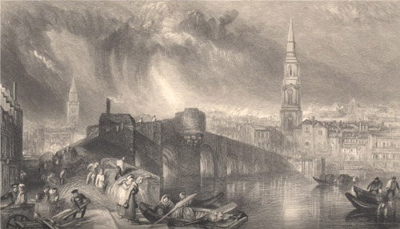

|
 Inverness, engraved by W. Miller after J.M.W. Turner (1836).
From: The Prose Works of Sir Walter Scott, Bart. Vol. 26 (Edinburgh: Cadell, 1836). A royal burgh since the 12th century and a city since the year 2000, Inverness has long been considered the capital of the Highlands. Following the Jacobite Uprising of 1715, its castle was greatly enlarged by General Wade, and a substantial garrison quartered there as a means of pacifying the Highlands. The town was captured by the Jacobites in 1746, who after their defeat a Culloden, destroyed most of the Castle by laying mines under it. The massive military complex of Fort George was subsequently built just outside Inverness. |